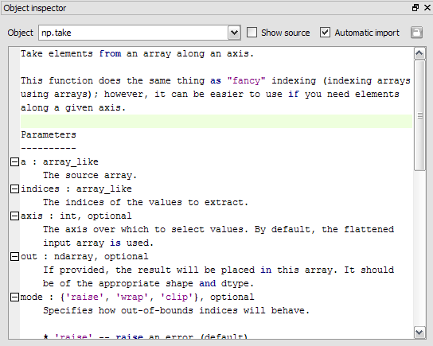
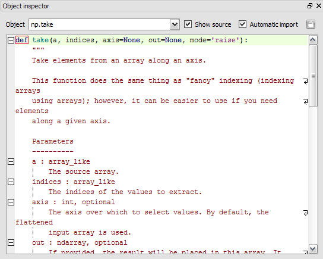

Object inspector¶
The object inspector plugin works together with the Interactive Console and the External Console: it shows automatically documentation available when the user is instantiating a class or calling a function (pressing the left parenthesis key after a valid function or class name triggers the object inspector).
Note that this automatic link may be disabled by pressing the “Lock” button (at the top right corner of the window).
Of course, one can use the documentation viewer directly by entering an object name in the editable combo box field, or by selecting old documentation requests in the combo box.
Sometimes, when docstrings are not available or not sufficient to document the object, the documentation viewer can show the source code (if available, i.e. if the object is pure Python):
- Related plugins: